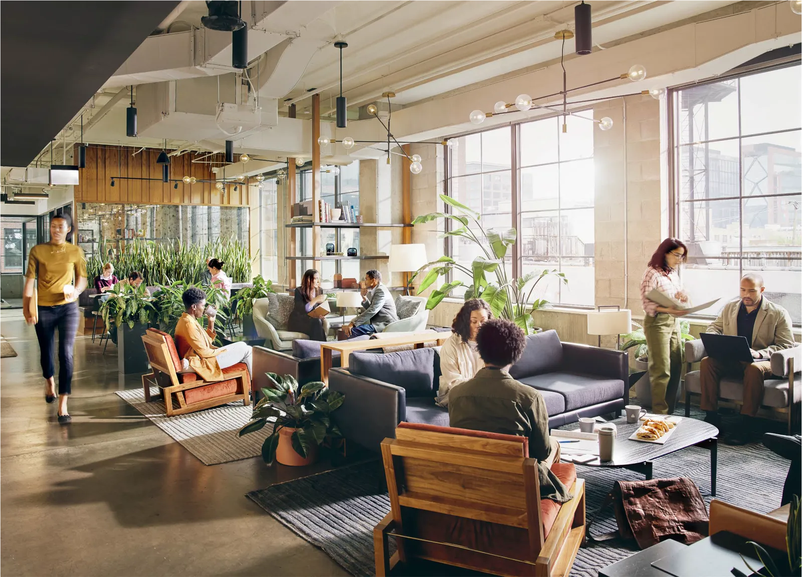
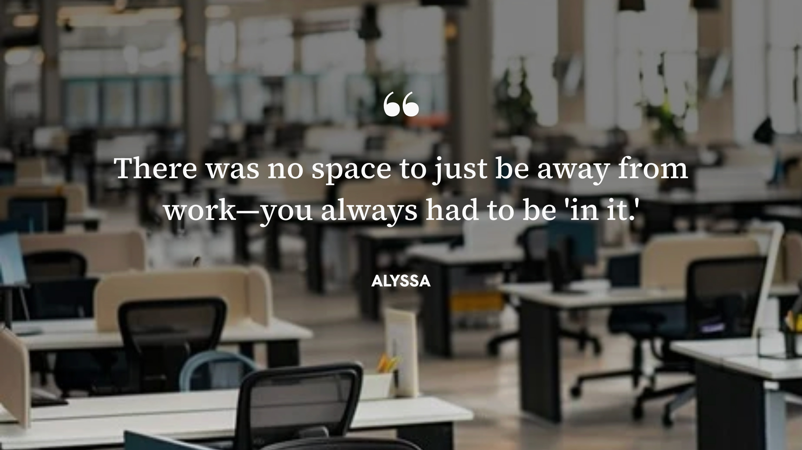
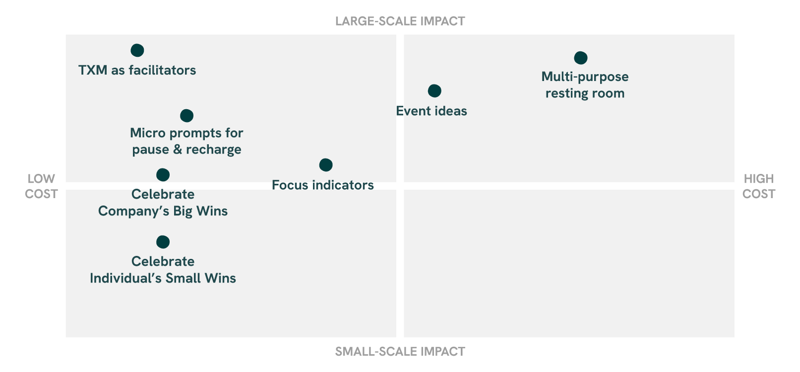

Engaging the Unengaged
The human side of coworking
Present, but Not Connected.
Industrious built its coworking spaces around flexibility, community, and wellness. But even in a space designed around people, some members still struggle to engage. They show up, do their work, and leave, never quite feeling like they belong.
These aren't people who don't care. They're members whose needs don't match how the workspace is set up. Some feel pressured to always be on. Others see events as forced networking. Many would rather just stay home, where they have more control over their day.
Our team set out to understand why, and what it would actually take to change it.
"If an event is just for networking — no real theme — I feel uncomfortable."— Sally, Research Participant
Getting Under the Surface
This was a team research project, and I was involved across all of it. We ran a SWOT analysis of the coworking landscape, observed members on-site, conducted intercept and in-depth interviews with eight people who had coworking experience, and spoke with a stakeholder to get the organizational view.
One theme kept surfacing: members are constantly managing their energy. They come to cowork, but they also need room to step away and recharge. When that balance breaks, they disengage.
Our findings broke into three areas.
 Feeling human, not like a machine
Feeling human, not like a machine
What draws people to a shared workspace isn't professional networking. It's the small, genuine moments: checking in on someone, a casual chat by the coffee machine. Being in office mode doesn't mean wanting to be on all the time, and when people felt permission to pause, they were actually more productive.

Autonomy through the workday
Everyone has different energy rhythms and focus needs. When members can structure their own day, the quality of work improves. When the space forces one way of working, they check out or just stay home. Most coworking spaces don't give people a clear way to signal what mode they're in, and that friction adds up.
Community beyond networking
The strongest sense of belonging happened when people shared a purpose, not just a floor plan. The unengaged often associated traditional networking events with pressure and performance. What stuck instead were effortless, everyday interactions, and those casual connections tended to last longer than anything structured.
"Many events felt promotional, but hands-on community events were most valuable to me."— Isaac, Research Participant
Two insights shaped everything that followed.
Insight 1
People don't need more events. They need permission to be human.
Members aren't disengaged because there's not enough programming. They're disengaged because the space doesn't always acknowledge that people need to recharge, connect on their own terms, and feel seen as more than just workers.
Insight 2
The best connections happen when no one is trying to network.
Forced networking pushes the unengaged further away. But low-stakes, everyday interactions — a shared snack, a casual conversation, a collaborative moment — build community more effectively than any structured event.
What surprised me most wasn't the disengagement itself. It was how little it took to change it. A friendly greeting. A shared snack. Someone remembering your name. These weren't big programmatic interventions. They were just human.
A Framework, Not a Fix
Rather than recommending more programming, we designed a framework of small, intentional shifts, each mapped by cost and potential impact to help Industrious prioritize where to start.
TXM as facilitators
Simple internal guidelines for experience managers: friendly greetings, regular check-ins, small gestures that make members feel seen. Low cost, high impact on how connected people feel day to day.
Micro prompts for pause & recharge
Small surprises embedded into the space: notes, snacks in communal areas, low-stakes prompts that lead to unexpected encounters. These gentle nudges encourage people to pause, look up, and connect without any pressure to perform.
Focus indicators
Simple cues like "Do Not Disturb" or "Free to Chat" give members control over when and how they interact, bringing the boundary-setting they have at home into a shared space where those boundaries rarely exist.
Celebrating wins, big and small
Recognizing company milestones on shared screens or through the Industrious app creates collective pride and opens the door to cross-tenant connections. A simple notification acknowledging a long day or hard meeting gives members something to anchor positive feelings to the workplace. When wins are visible, the workplace becomes where they happen.
Events that start conversations
Cooking sessions, plant workshops, rotating polls by the candy jar. Activities that give people something to take back to their desks and a reason to keep talking.
Multi-purpose resting room
A room for napping, meditation, prayer, or quiet reflection gives members a place to step away without stepping out. Keeping the name neutral makes it inclusive rather than prescriptive, and signals that people are genuinely cared for.

What This Makes Possible
We presented the framework to the Industrious team with a recommendation to pilot a few ideas and measure how members respond. Some interventions can be implemented right away. Others need more planning. But none of them require a full overhaul of how the space operates.
The project reframed engagement not as a programming problem, but as a daily experience problem. When participation feels optional and the space makes room for people to be human, community forms on its own.
What I Took Away
The small stuff is the big stuff
The finding that stayed with me most wasn't about events or amenities. It was about human touch. A warm greeting, a note left in a common area, someone noticing you were having a rough day. These were consistently more meaningful than anything on the events calendar.
Disengagement is a design problem, not a people problem
Members weren't checked out because they didn't care. They were checked out because the environment wasn't meeting them where they were. Reframing the question from "how do we get people to show up?" to "what's getting in the way?" changed everything about how we approached the solution.
The best connections happen on their own terms
When people are given the freedom to engage on their own terms, the connections that form are more genuine and tend to last longer. Good design creates the conditions for that freedom without losing sight of community.